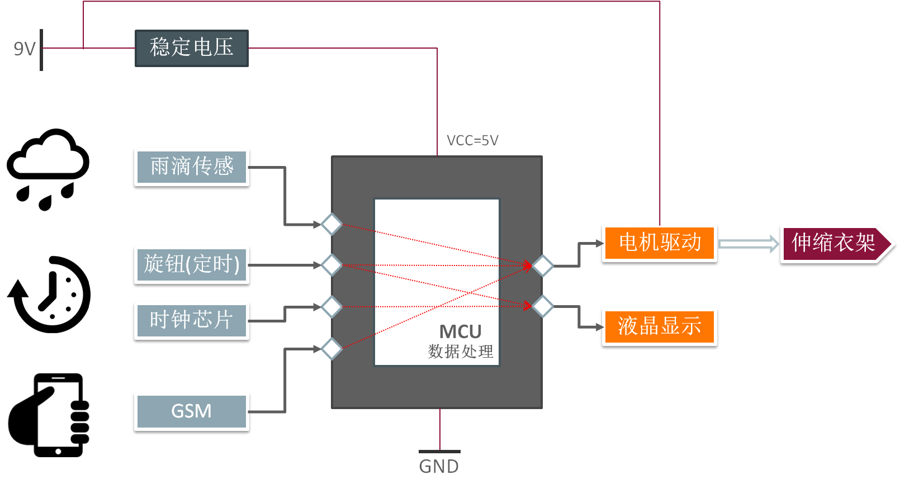
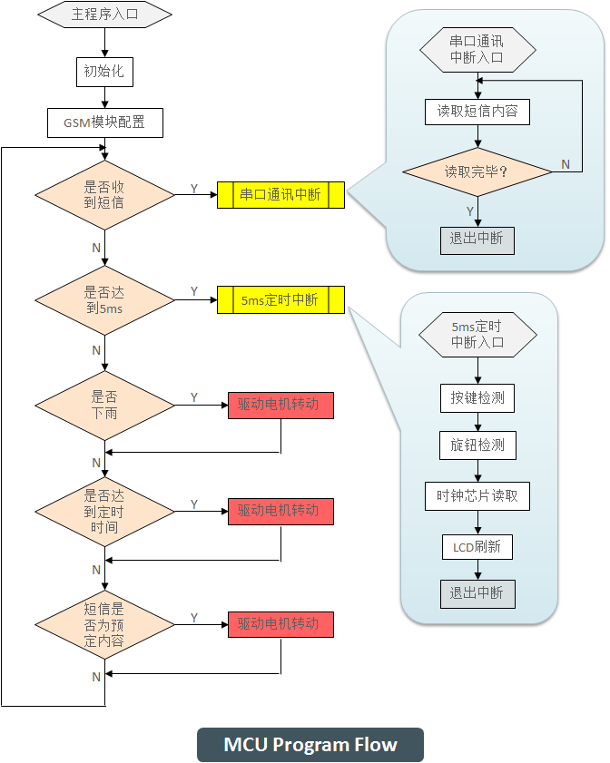
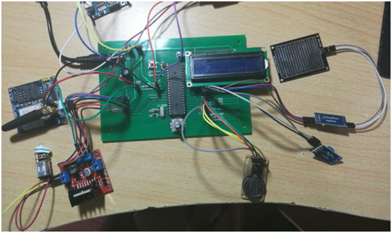

系统的基本结构框架如下： 主要分为1) 输入处理(包括信号和数据)； 2) MCU功能实现； 和3)输出信号及显示。

主程序首先对MCU的内部资源(中断、定时器、串口等)和GSM模块进行初始化配置，之后进入循环状态，进行两个任务的执行：
- 检测信号： 是否下雨? 是否达到定时时间? 是否接收到短信? 短信内容是ON还是OFF?
- 等待中断
- 等待5ms定时中断，每当定时器计时到5ms，进入定时中断服务程序，完成旋钮的按下检测和旋转检测，以及读取实时时间数据并据此对液晶屏进行刷新；
- 等待串口通讯中断，每当GSM模块接收到短信并发出通信请求时，进入串口通讯中断服务程序，完成短信内容的读取。

在软件设计部分的一个主要问题是程序中各任务执行的顺序和MCU内部资源的分配。
MCU需要完成的主要任务有旋钮检测、LCD刷新、短信数据读取、实时时钟数据读取，这些任务如果全部放在主程序中以线性方式执行，会造成数据采集和处理的延迟。
- 其中旋钮按下检测的间隔需要约5ms时间，如果采取延时方式会造成MCU的闲置，因此设置一个5ms定时中断，在计时的同时，MCU可以检测处理其他信号，5ms计时结束进入中断后再进行检测。
- LCD显示内容的改变主要来自实时时钟，因此实时时钟数据的读取和LCD的刷新可以同步执行，由于该过程语句较多，执行一次耗时较长，因此不直接在主程序中调用，而是放在5ms定时中断服务程序中，每5ms执行一次。
- 短信数据的读取放在定时中断内，每执行一次约3ms。
- 定时功能原计划是直接使用MCU内部的定时器。MCU共有两个定时器，但如果这样的话讲导致程序中共有三个部分需要定时器：旋钮按下检测的5ms延时、定时功能、电机持续转动时间(约3s)的定时。因此，最后选择采用独立的时钟芯片实现定时功能。
